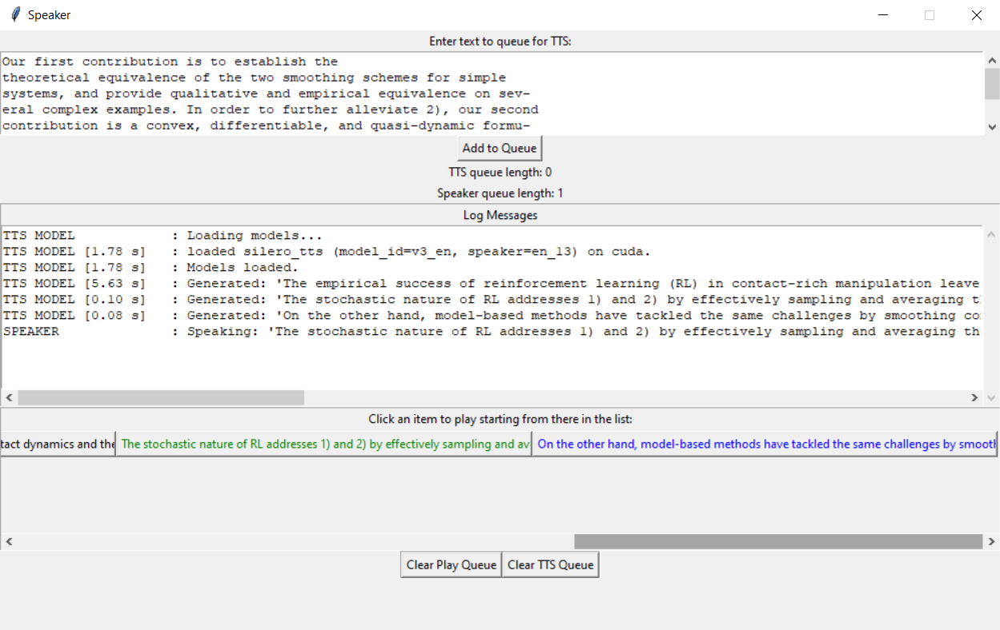

Local Neural Text-to-Speech App

On Android, Pocket provides a nice text-to-speech feature that lets you listen to articles you've saved that you don't care enough about to actually read with your human eyes and full attention. But they don't do this in their browser-based desktop site.
So, here's a crappy little app that does that. It's a local-only text-to-speech app in PyTorch using TacoTron2 for spectrogram generation and WaveGlow for audio synthesis.
Two worker threads handle the work: one to make the waves, and the other to speak them. The GUI breaks the given text up into chunks at sentence-like boundaries (using a few whitelisting regexes followed by a few blacklisting regexes to find those boundaries) and pushes them onto a first queue.
The first worker thread preprocesses this text to tokens, ~tacotron2s it to a spectrogram, waveglows it to a big 1D array~ uses the turnkey Silero offline PyTorch TTS engine to make a wave from this, and pushes that to a queue for our UI to ingest.
The second worker thread pops dictionaries containing audio and metadata off a different queue, and plays the audio out loud (blocking that thread appropriately).
There's a nice little GUI that lets you type in text and add it to the queue, with some information that's probably ultimately useless to the user; namely the length of the two queues, and messages returned from the two workers in a autoscrolling log box.
Underneath the log window, there's a scrollable canvas of buttons to play the indicated results. If you click one, it and all following boxes change text color to blue to indicate they're queued for playing. Then the player worker starts popping them, and turning them green as it goes.
Some problems I could eventually fix:
- The actual voice is pretty rough. Get a better model. WaveRNN is much nicer, but too slow without smarter chunking. After the author provided a workaround for a bug I reported, I can now use all 117 of the Silero voices, which are good enough for me. Tacotron+WaveRNN would still be preferable if I could get it fast enough, though.
- Sometimes the player thread runs out of of things to say because the model thread is too slow to generate them. Not sure what can be done about this. Silero seems fast enough for this not to be a problem.
- Get the memory usage down. It's something like 5.3GB! Maybe quantized models could help with this.
- Well, actually, Process Explorer reports a much smaller number? Hard to tell.
- It now (with the Silero model) seems that it's more like 200MB of CPU memory (I'm still unsure about it's actual GPU memory, which was what the 5.3GB number was about) when doing nothing,
- plus maybe 10MB per sentence when they're sitting in the the TTS queue
- plus about 1MB per sentence when they're sitting in the speaker queue
- Worse, sometimes the sentence is too long for the TacoTron, and it starts outputing gibberish. Do smaller chunks.
-
Improve the playhead UI.
- Don't just discard converted audio--let the user go back to previous chunks with the playhead.
- Add pause buttons, not just stop-all.
- Indicate how much of the text is converted to audio with some kind of "buffering" playhead indicator.
- Maybe instead of buttons for TTS'd sentences, have a text canvas with clickable regions. Much easier to scan visually.
- Use a prettier UI style.
- Make the UI at least somewhat rescalable.
- Add a checkbox to enable pausing autoscrolling of the log (or just drop the log if the UI is informative enough).
Installation and Usage
Use some recent Python 3 (I think 3.6+ is required).
Install the requirements:
pip install -r requirements.txt pip install -r requirements_pytorch_gpu_cu118.txt
Or, you could skip the second line and use PyTorch's instructions to get the corresonding pacakges for your platform.
I don't know whether all those packages would be avalable on Anaconda; use conda-forge or something, I guess.
Then, run the app:
python app.py
Ctrl+C or close the window to quit.